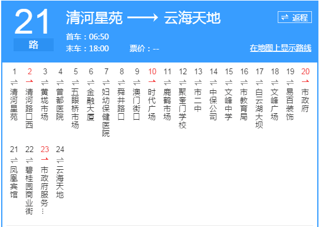

根据湖北省教育厅教师管理处《关于2018年我省教师资格认定工作安排的通知》（教师处〔2018〕1号），现将我区2018年教师资格认定的有关事宜公告如下：
一、认定范围
根据《教师资格条例》关于“幼儿园、小学和初级中学教师资格，由申请人户籍所在地或申请人任教学校所在地的县级人民政府教育行政部门认定”的规定，受理以下人员的认定申请：
1、户籍在现曾都区辖区内（含随州高新区，下同）的人员（以身份证上的地址为准，下同）。
2、户籍不在现曾都区辖区内，但在现曾都区辖区内的学校工作的人员。
特别提醒：不受理认定范围以外人员的认定申请，请在选择认定机构时务必注意。
二、认定种类
初级中学、小学和幼儿园教师资格。
三、认定条件
1、学历条件：
（1）初级中学教师资格：大学本科及以上学历。
（2）小学教师资格：大学专科及以上学历。
（3）幼儿园教师资格：大学专科及以上学历，或湖北省教育厅评估合格的具备举办学前教育资质的49所中等职业学校（鄂教师〔2012〕23号）。
2、普通话水平：
（1）语文学科和幼儿园教师资格：二级甲等及以上水平；
（2）其它学科教师资格：二级乙等及以上水平。
3、全国教师资格考试合格证。必须在近3年的有效期内。
4、体检合格报告。曾都区教师资格申请人员体检约定医院为“随州市中医院（西城沿河大道花溪桥，曾都区财政局对面）”，体检联系电话：0722-3316035。近一个月内体检合格的报告有效。请在“中国・曾都网――教育局”上自己下载《体检表》，插入电子照片后用A4纸正反两面打印。
5、思想品德鉴定。（1）户籍在现曾都区辖区内的申请人由户籍所在地街道办事处（或村委会或户口所在单位）鉴定；（2）户籍不在现曾都区辖区内但在现曾都区辖区内的学校工作的申请人由其所在的学校鉴定。请在“中国・曾都网――教育局”上自己下载《思想品德鉴定表》，插入电子照片后用A4纸正反两面打印。
特别提示：不是由曾都区户籍所在地街道办事处（或村委会或户口所在单位或曾都区辖区内的学校）出具的《思想品德鉴定》无效。
四、申请、认定程序
（一）申请人网上注册
1.网上注册时间：秋季：2018年9月25日－10月12日之间的系统开放日7：00-24：00。
2.网上注册方法：申请人登录“中国教师资格网”(www.jszg.edu.cn），从“全国统考合格申请人网报入口”进入系统，选择“曾都区政务服务中心确认点”，根据系统提示，仔细阅读申报系统中的“注意事项”，逐条、逐页、如实、完整填报申请信息，审核无误后点击“提交”，然后从系统中打印《教师资格认定申请表》一式二份（用A4纸正反双面打印）。
有关指标填报要求：
①照片：必须上传近3个月以内的免冠无头饰彩色证件照片，jpg格式，淡蓝色、白色或红色背景，114×156像素，大小在20K以内（照片上传后，也可点击照片左上角的“＋－”号，调节上传照片的大小到合适为止）。
②没有专业技术职称的一律选“无”。
③普通话发证单位一律按《普通话证》上的公章填写，如“湖北省语言文字工作委员会”。
④户籍所在地：按照二代身份证上的详细地址填写。
⑤出生地：从随州市填到乡镇（或办事处或居委会）。例如：随州市曾都区XX镇。
⑥工作单位：必须与学校或单位公章一致，没有工作单位的填“无”。
⑦电子信箱：必须用QQ信箱，且必须正确，例如：6114447789@qq.com。
⑧简历：一定要按系统提供的格式从高中毕业填起，分条一直填写到当前，结束时间必须填“至今”，例如：2016年9月1日至今，在XXX单位工作。
（二）申请人到现场进行资格确认
申请人（可以请他人代办）网上申报成功后必须在规定的时间内，持以下证件和材料（缺一不可），到曾都区政务服务中心确认点进行现场确认，申请人未在规定的时间内到现场确认的，注册信息自动失效，下期需重新注册。
1.现场确认时间：秋季：2018年9月26日－10月19日（有效工作日）。
2.确认地点：曾都区政务服务中心B区综合窗口，联系方式：0722-3257636、0722- 3336806。市内乘21路公共汽车到市政务服务中心下车即到。
3.现场确认须提交以下原始证件和复印件：（缺一不可）
（1）直接从系统中打印《教师资格认定申请表》一式2份。必须用A4纸正反两面打印，其中一份只订一颗订书钉，另一份不装钉，不受理单面打印的《教师资格认定申请表》，申请人本人必须在“诚信承诺栏”签名和填写日期。
（2）提交以下复印件。必须按顺序整理，不装订，由现场确认人员按确认顺序分类收集存档：
①身份证复印件，（现场核对原件）。
②《毕业证书》复印件1份，（现场核对原件）。
③学历证明1份（直接从“学信网”上打印，须有《毕业证书》编号，无《毕业证书》编号的学籍证明无效）。
④《全国教师资格考试合格证》1份，直接从“中小学教师资格考试网”上下载打印。
⑤《普通话等级证》复印件1份，（现场核对原件）。
⑥《体检表》原件1份。初中、小学教师资格申请人提供《湖北省中小学教师资格申请人体检表》原件1份；幼儿园教师资格申请人提供《湖北省幼儿园教师资格申请人体检表》原件1份。
⑦《申请人思想品德鉴定表》原件1份。
另外准备1张1寸纸质登记照片用于办理《教师资格证书》（必须与网上注册时上传的登记照片为同一底版）。
五、其他事项
1.《思想品德鉴定表》的政治思想表现可以简要填写“优秀”、“优良”、“好”、“合格”或“无违纪违法等不良记录”。
2.现场确认合格后90天左右（如果空白证书能够早点发下来，则30天左右），在曾都区政务服务中心领取《教师资格证书》。请随时关注“中国・曾都网――教育局”网站上的领证通知。
3.其他：申请人的联系电话必须保持畅通，邮箱地址必须填写正确，牢记注册密码。
附件：1.湖北省中小学教师资格申请人体检表
随州市曾都区教育局
2018年8月22
曾都区教师资格现场确认点乘车路线图

客户端下载
官方微信